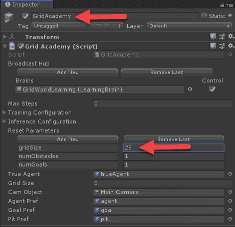
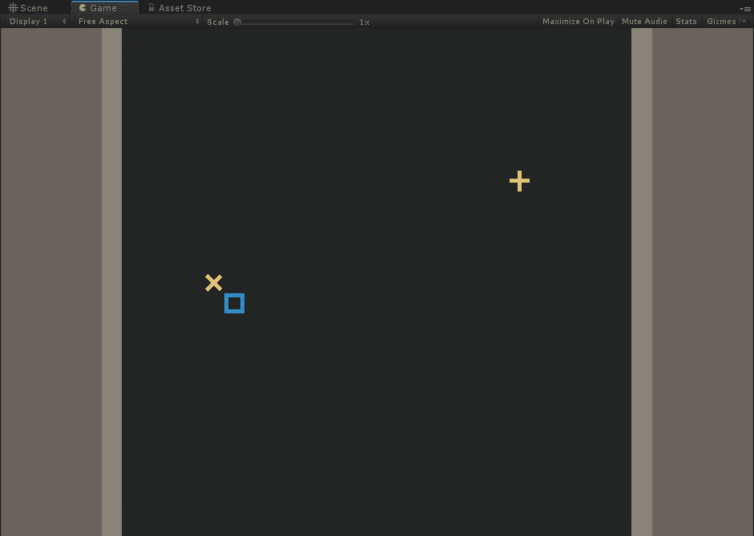
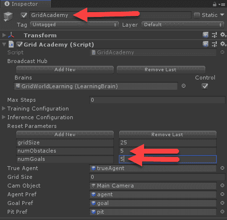
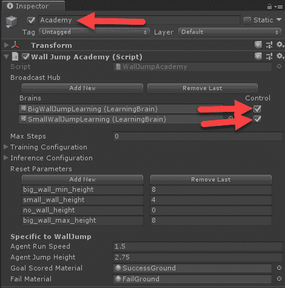
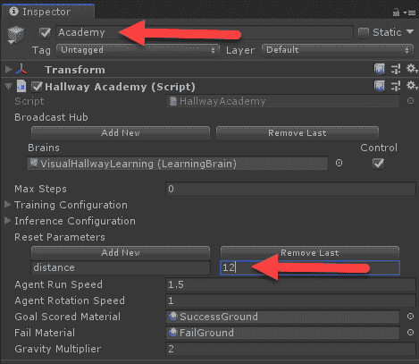
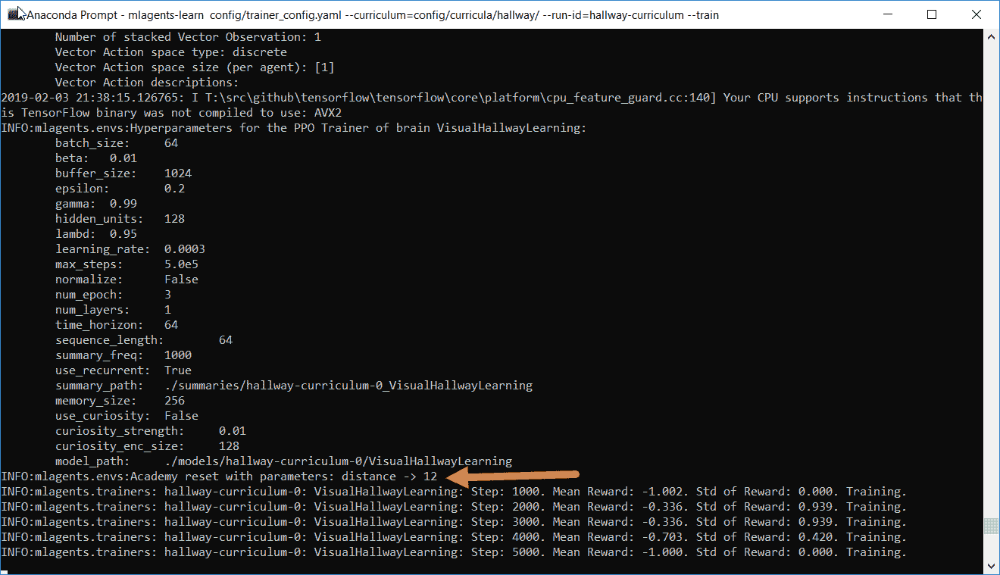
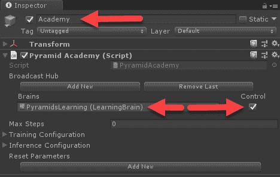

奖励是强化学习的一个基本方面，概念很容易掌握。毕竟，我们在一定程度上通过奖励强化来教育和训练他人——比如狗和孩子。在模拟中实现奖励或reward功能的概念可能有些困难，并且容易出现大量的反复试验。这就是为什么要等到后面更高级的章节再来讲奖励，构建reward函数，以及课程学习、回溯、好奇心学习、模仿学习/行为克隆等奖励辅助方法的原因。
以下是我们将在本章中涉及的概念的快速总结:
虽然这是一个高级章节，但也是必不可少的一章，不是你想跳过的。同样，许多表现出色的RL演示，如DeepMind的AlphaStar，使用本章中的高级算法来教代理完成以前认为不可能的任务。
我们经常面对这种基于奖励的学习或培训的先入为主的观念，它包括一个完成的行动，然后是奖励，无论是好是坏。虽然RL的概念完全适用于单个基于动作的任务，例如我们前面看到的旧的多臂强盗问题，或者教狗一个技巧，但请记住，强化学习实际上是代理通过一系列动作预测未来的回报来学习动作的价值。在每个行动步骤中，当代理不探索时，代理将根据它认为具有最佳回报的东西来决定它的下一步行动。不太清楚的是这些奖励在数字上应该代表什么，以及这在多大程度上是重要的。因此，设计一组简单的reward函数来描述我们希望代理训练的学习行为通常是有帮助的。
让我们打开GridWorld示例的Unity编辑器，学习如何创建一组描述该训练的reward函数和映射，如下所示:
mlagents-learn config/trainer_config.yaml --run-id=gridworld --train
在5x5网格上运行的GridWorld示例
请注意，当代理学习将立方体放置在绿色+上时，它是如何快速从负奖励变为正奖励的。然而，你是否注意到代理从负的平均奖励开始训练？代理从零奖励值开始，所以让我们检查负奖励来自哪里。在下一节中，我们将通过查看代码来了解如何构建reward函数。
构建reward函数可以非常简单，就像这个函数一样，也可以非常复杂，就像你可以想象的那样。虽然这一步对于训练这些示例来说是可选的，但是当您构建自己的环境时，它几乎是强制性的。它还可以识别你训练中的问题，以及加强或放松训练的方法。
打开Unity编辑器，按照这个练习来构建这些示例reward函数:
public override void AgentAction(float[] vectorAction, string textAction)
{
AddReward(-0.01f);
int action = Mathf.FloorToInt(vectorAction[0]);
... // omitted for brevity
Collider[] blockTest = Physics.OverlapBox(targetPos, new Vector3(0.3f, 0.3f, 0.3f));
if (blockTest.Where(col => col.gameObject.CompareTag("wall")).ToArray().Length == 0)
{
transform.position = targetPos;
if (blockTest.Where(col => col.gameObject.CompareTag("goal")).ToArray().Length == 1)
{
Done();
SetReward(1f);
}
if (blockTest.Where(col => col.gameObject.CompareTag("pit")).ToArray().Length == 1)
{
Done();
SetReward(-1f);
}
}
}
通过绘制这些reward函数，我们可以看到，一个主体能够获得积极回报的唯一途径就是找到通向目标的路。这就是代理人从负奖励开始的原因，它本质上只是首先学会避免浪费时间或移动，直到它随机遇到目标。从那里，代理可以根据以前收到的积极奖励快速分配状态值。问题是，在我们开始实际培训之前，代理首先需要获得积极的奖励。我们将在下一节讨论这个特殊的问题。
我们把一个代理人没有得到足够的或任何积极的回报的情况称为回报稀疏。展示奖励稀疏性如何发生的最简单的方法是通过例子，幸运的是，GridWorld的例子可以很容易地为我们演示这一点。打开GridWorld示例的编辑器，并遵循以下练习:

设置GridAcademy gridSize参数
mlagents-learn config/trainer_config.yaml --run-id=grid25x25 --train

网格大小为25x25的GridWorld

更新障碍和目标的数量
mlagents-learn config/trainer_config.yaml --run-id=grid25x25x5 --train
奖励稀疏的问题一般在离散动作任务中遇到的更频繁，比如grid world/hallow等等。因为reward函数往往是绝对的。在持续学习任务中，reward功能通常更为渐进，通常通过目标的一些进展来衡量，而不仅仅是目标本身。
通过增加障碍和目标的数量——消极和积极的奖励——我们能够更快地训练代理人，尽管您可能会看到非常不稳定的训练周期，并且代理人永远不会真正达到原来的水平。事实上，培训实际上可能会在以后的某个时候出现分歧。之所以这样，部分是因为它的视野有限，我们只是部分纠正了稀疏奖励的问题。当然，我们可以通过简单地增加目标和障碍的数量来解决这个例子中奖励稀少的问题。你可以回过头来尝试将障碍和奖励的数量设为25，这样会看到更稳定、更长期的结果。
当然，在许多RL问题中，越来越多的奖励不是一个选项，我们需要寻找更聪明的方法，正如我们将在下一节中看到的。幸运的是，在很短的时间内出现了许多方法，试图解决奖励稀少或困难的问题。Unity处于领先地位，很快就采用并实施了许多方法，我们将看到的第一种方法叫做课程学习，我们将在下一节讨论。
课程学习允许代理通过加强reward功能来逐步学习困难的任务。当奖励保持绝对时，代理人以一种更简单的方式发现或实现目标，因此知道奖励的目的。然后，随着训练的进行和代理人的学习，获得奖励的难度增加，这反过来又迫使代理人学习。
当然，Unity有一些这样的示例，我们将在下面的练习中查看如何设置课程学习示例的WallJump示例:

让多个大脑开始学习
{
"measure" : "progress",
"thresholds" : [0.1, 0.3, 0.5],
"min_lesson_length": 100,
"signal_smoothing" : true,
"parameters" :
{
"small_wall_height" : [1.5, 2.0, 2.5, 4.0]
}
}
mlagents-learn config/trainer_config.yaml --curriculum=config/curricula/wall-jump/ --run-id=wall-jump-curriculum --train
这个例子介绍了一种我们可以用来解决奖励稀少或难以实现的问题的技术。在下一节中，我们来看一种叫做回放的特殊形式的课程培训。
2018年末，Cinjon Resnick发布了一篇创新论文，题为Backplay:Man muss immer umk ehren，(https://arxiv.org/abs/1807.06919)介绍了一种称为Backplay的课程学习的精炼形式。基本的前提是，你或多或少地在目标时启动代理，然后在训练期间逐步将代理移回。这种方法可能不适用于所有情况，但我们将在课程培训中使用这种方法，看看如何在下面的练习中改进VisualHallway示例:

在学院上设置新的重置参数
public override void AgentReset()
{
float agentOffset = academy.resetParameters["distance"];
float blockOffset = 0f;
// ... rest removed for brevity
mlagents-learn config/trainer_config.yaml --run-id=vh_backplay --train
让训练跑一段时间，观察训练和原来的区别。有一点你会注意到，那就是代理现在忍不住撞上了悬赏，这就是我们所追求的。我们需要实现的下一部分是课程学习部分，在下一部分中，当代理学习寻找奖励时，我们将它移回。
在上一节中，我们实现了反向播放的第一部分，即让代理从目标旁边或非常接近目标的地方开始。我们需要完成的下一部分是使用课程学习逐步将代理移回其预期的起点。再次打开Unity编辑器到VisualHallway场景，并按照以下步骤操作:
{
"measure" : "rewards",
"thresholds" : [0.1, 0.2, 0.3, 0.4, 0.5, 0.6, 0.7],
"min_lesson_length": 100,
"signal_smoothing" : true,
"parameters" :
{
"distance" : [12, 8, 4, 2, -2, -4, -8, -12]
}
mlagents-learn config/trainer_config.yaml --curriculum=config/curricula/hallway/ --run-id=hallway-curriculum --train

观看课程参数在培训中的设置
现在，我们需要澄清的一件事是，这个例子与其说是一个真实的回放例子，不如说是一个创新的例子。实际回放被描述为将代理放在目标处并向后工作。在本例中，我们将代理放在目标附近，并反向工作。差别是微妙的，但是，到现在为止，希望你能意识到，就训练而言，这可能是重要的。
到目前为止，我们只考虑了代理在环境中可能获得的外在或外部奖励。例如，在走廊的例子中，当代理人达到目标时，给予+1的外部奖励，如果它达到错误的目标，给予-1的外部奖励。然而，像我们这样的真实动物实际上可以基于内部动机或通过使用内部reward功能来学习。一个很好的例子是一个婴儿(一只猫，一个人，或任何东西),他有一个明显的通过玩耍来好奇的自然动机。玩耍的好奇心给婴儿提供了一种内在或内在的奖励，但实际的行为本身却给了它一种负面的外在或外在的奖励。毕竟，婴儿正在消耗能量，这是一种消极的外部奖励，然而，为了学习更多关于周围环境的一般信息，他不停地玩耍。这反过来允许它探索更多的环境，并最终达到一些非常困难的目标，如狩猎或去工作。
这种形式的内部或内在奖励模型属于RL的一个子类，称为激励强化学习。正如你可以想象的那样，这整个学习过程可以在游戏中有巨大的应用，从创造NPC到更可信的对手，这些对手实际上是由一些个性特征或情感激发的。想象一下，有一个电脑对手会生气，甚至有同情心？当然，我们还有很长的路要走，但在此期间，Unity增加了一个内在的奖励系统，以模拟代理的好奇心，这被称为好奇心学习。
好奇心学习 ( CL )最初是由加州大学伯克利分校的研究人员在一篇名为好奇心驱动探索通过 自我监督预测、你可以在https://pathak22.github.io/noreward-rl/.找到的论文中开发的。这篇论文继续描述了一个使用正向和反向神经网络解决稀疏回报问题的系统。他们将该系统称为内在好奇心模块 ( ICM )，旨在将其用作其他RL系统之上的一个层或模块。这正是Unity所做的，他们已经把它作为一个模块添加到ML-Agents中。
Unity的首席研究员Arthur Juliani博士在https://blogs . Unity 3d . com/2018/06/26/solving-sparse-reward-tasks-with-curiosity/上发表了一篇关于他们实施情况的精彩博文。
ICM通过使用逆神经网络来工作，该逆神经网络使用代理的当前和下一次观察来训练。它使用编码器对当前和下一个状态之间的动作预测进行编码。然后，前向网络在当前观察和动作上被训练，其中它编码到下一个观察。然后从反向和正向模型中获取实际和预测编码之间的差异。在这种情况下，差异越大，惊喜越大，奖励越有内在。从Juliani博士的博客中摘录的图表如下所示，描述了其工作原理:
该图以蓝色显示了两个模型和层的描述，正向和反向，蓝色线条表示网络流量，绿色方框表示内在模型计算，而奖励输出以绿色虚线的形式表示。
好了，理论到此为止，是时候看看这个CL在实践中是如何工作的了。幸运的是，Unity有一个非常好的开发环境，它的特点是这个新模块叫做金字塔。让我们打开Unity，按照下一个练习来查看这一环境的运行情况:
现在，对于那些没有提前阅读或玩的人来说，这是前提。场景开始时，代理人被随机放置在一个有石头金字塔的房间区域，房间里有一个开关。代理的目标是激活开关，然后产生一个金字塔形的沙盒，顶部有一个大的金盒。开关被激活后，由红色变为绿色。金字塔出现后，代理人需要将金字塔撞倒并取回金盒。这当然不是最复杂的谜题，但确实需要一点探索和好奇心。
想象一下，如果我们试图用一组reward函数来模拟这种形式的好奇心，或者需要探索。我们将需要一个reward功能来激活按钮，移动到房间，打翻积木，当然，得到金盒子。然后，我们必须确定这些目标中每一个的价值，也许使用某种形式的逆向强化学习 ( IRL )。然而，通过好奇心学习，我们可以为得到盒子的最终目标(+1)创建奖励函数，也许还有一个小的负步骤目标(. 0001)，然后使用内在好奇心奖励让代理学习剩余的步骤。相当聪明的技巧，我们将在下一节看到它是如何工作的。
鉴于金字塔任务的难度，我们可以在下面的练习中继续带着好奇心训练代理:

设置学院控制
PyramidsLearning:
use_curiosity: true
summary_freq: 2000
curiosity_strength: 0.01
curiosity_enc_size: 256
time_horizon: 128
batch_size: 128
buffer_size: 2048
hidden_units: 512
num_layers: 2
beta: 1.0e-2
max_steps: 5.0e5
num_epoch: 3
将参数保留为设定值。
mlagents-learn config/trainer_config.yaml --run-id=pyramids --train
虽然此培训课程可能需要一段时间，但观看代理如何探索会很有意思。即使在当前设置下，仅使用一个训练区域，您也可以看到代理在几次迭代中解决难题。
由于ICM是一个模块，它可以被快速激活，用于我们想要查看效果的任何其他示例，这是我们将在下一节中做的事情。
不像我们训练的特工，我们从反复试验中学到了很多。这就是我们练习、练习、再练习那些非常困难的任务的原因，比如跳舞、唱歌或演奏乐器。RL也不例外，它要求从业者通过严格的试验、错误和进一步的探索来学习训练的细节。因此，在下一个练习中，我们将把Backplay(课程学习)和Curiosity Learning结合到我们的老朋友“走廊”中，看看它有什么效果，如下所示:
HallwayLearning:
use_curiosity: true
curiosity_strength: 0.01
curiosity_enc_size: 256
use_recurrent: true
sequence_length: 64
num_layers: 2
hidden_units: 128
memory_size: 256
beta: 1.0e-2
gamma: 0.99
num_epoch: 10
buffer_size: 1024
batch_size: 1000
max_steps: 5.0e5
summary_freq: 1000
time_horizon: 64
这可能需要您创建一个新的课程表文件，该文件使用的参数与我们之前创建的相同。请记住，课程文件需要与它所针对的大脑同名。
mlagents-learn config/trainer_config.yaml --curriculum=config/curricula/hallway/ --run-id=hallway_bp_cl --train
这个练习展示了如何运行一个代理，既有课程学习模拟回放，又有好奇心学习将代理动机的一个方面添加到学习中。正如你可以想象的那样，内在奖励学习和整个激励强化学习领域可能会给我们的DRL带来一些有趣的进步和增强。
在下一节中，我们将回顾一些有用的练习，这些练习应该有助于您更多地了解这些概念。
虽然你读这本书的动机可能会有所不同，但希望现在你能体会到自己做事的价值。一如既往，我们提供这些练习供您享受和学习，并希望您在完成这些练习时获得乐趣:
正如你所看到的，随着我们阅读全书的进展，练习变得越来越难。记住，即使完成这些练习中的一两个，也会对你的外卖知识产生影响。
在这一章中，我们看了RL的一个基本组成部分，那就是奖励。我们了解到，在构建培训环境时，最好是定义一组我们的代理将遵循的reward功能。通过理解这些等式，我们可以更好地理解频繁或稀疏的奖励会对训练产生怎样的负面影响。然后，我们研究了几种方法，第一种叫做课程学习，可以用来减轻或提高代理人的外在奖励。之后，我们探索了另一种技术，称为Backplay，它使用反向播放技术和课程培训来增强代理的培训。最后，我们看了内部或内在奖励，以及激励强化学习的概念。然后我们了解到第一个发展成ML-agent的内在奖励系统是给一个agent好奇心的动机。我们看了如何在几个例子中使用好奇心学习，甚至通过课程学习将它与回放结合起来。
在下一章中，我们将着眼于模仿和迁移学习形式的更多奖励助手解决方案，在这里我们将学习如何将人类的游戏体验映射到一种称为模仿学习或行为克隆的学习形式。